| hour | workingday | adverse_weather | temperature_C | humidity_pct | windspeed_kmh | |
|---|---|---|---|---|---|---|
| 0 | 0 | 0 | 0 | 3.3 | 81.0 | 0.0 |
| 1 | 1 | 0 | 0 | 2.3 | 80.0 | 0.0 |
| 2 | 2 | 0 | 0 | 2.3 | 80.0 | 0.0 |
Interpretable Machine Learning
Data-Centric AI (Module II)
Matteo Francia
DISI — University of Bologna
m.francia@unibo.it
DISI — University of Bologna
m.francia@unibo.it

Session plan: theory and coding
| Activity | Duration |
|---|---|
| Theory 1: Interpretability, goals, method overview, logistic regression versus trees | 30 min |
| Coding 1: Compare interpretable models | 15 min |
| Theory 2: Local explanations with LIME and SHAP for tabular data | 30 min |
| Coding 2: Explain the same hour with both methods | 15 min |
| Theory 3: Explanation quality and multi-objective model selection | 30 min |
| Coding 3: Audit explanations and choose a model | 15 min |
Total: 135 minutes. Based on Molnar’s online book (Molnar, n.d.).
The interpretability issue
A validation score tells us how often a model predicts well, but leaves its reasoning hidden.
- A predictor can use information recorded after the outcome.
- Different fitted models can reach similar scores using different relationships.
- Understanding depends on the person and task, not just the algorithm.
Question: would you deploy a bike-demand model that uses registered rentals to predict total rentals?
Prediction, explanation, and causality
| Claim | What evidence supports it? |
|---|---|
| The model predicts well on these later hours | Held-out performance |
| The model uses temperature in this prediction | A rule, coefficient, or attribution |
| Raising temperature would increase real demand | A causal study with appropriate assumptions |
These are different claims. An explanation describes a fitted predictor; it does not automatically explain the data-generating process.
Goals of interpretability
| Goal | Bike Sharing question | Evidence to seek |
|---|---|---|
| Improve the model | Is there leakage or an encoding bug? | Inputs and rules used |
| Justify model or prediction | Why flag this hour as high demand? | An explanation an operator can inspect |
| Discover insights | Does the model capture commuting patterns? | Patterns across hours and working days |
Choose the question and audience before the explanation method.
Who needs the explanation?
A bike operator asks: “Should I prepare for demand during this hour?”
A model developer asks: “Did the model learn a shortcut?”
A researcher asks: “How does the fitted relationship vary by working day?”
Discuss: would a list of 100 coefficients answer all three questions? What would each person need to check?
Method overview
| Approach | Global: model behavior | Local: one prediction |
|---|---|---|
| Interpretable by design | Logistic coefficients; a small tree | Log-odds terms; a tree path |
| Post-hoc, model-agnostic | Permutation importance; PDP/ALE | LIME; KernelSHAP |
| Post-hoc, model-specific | Aggregate TreeSHAP values | TreeSHAP for a tree or forest |
Local scope does not mean the predictive model was trained locally. SHAP includes both model-agnostic and model-specific algorithms.
Working example: UCI Bike Sharing
Reuse lab 03’s real hourly rentals, from Capital Bikeshare in 2011–2012 (Fanaee-T 2013).
- Classification task: high demand means
cnt >= 200rentals/hour. - The fixed cutoff is a teaching scenario, not a UCI label or an optimized threshold.
cnt = casual + registered: exclude all three from predictors.- Exclude row ID and date; keep six readable predictors for this small example.
This is a retrospective analysis with recorded weather. Forecasting would require inputs available before the hour.
Evaluation protocol
| Partition | Dates | Purpose |
|---|---|---|
| Training | Jan 2011–Jun 2012 | Fit preprocessing and models; explanation background |
| Validation | Jul–Sep 2012 | Compare candidates and inspect explanations |
| Test | Oct–Dec 2012 | Evaluate once after model selection |
Balanced accuracy is the mean recall of the two classes. A constant prediction scores 0.5 when both classes occur.
Chronological splitting avoids mixing neighboring hours randomly; seasonal and yearly shifts still limit generalization.
Demand patterns in the training period
Does high demand occur at the same hours on working and non-working days?
Use the training period to inspect the relationship before fitting models. A visible pattern suggests useful features; it does not prove causality.
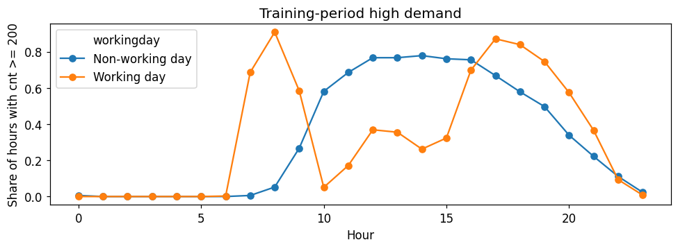
Logistic regression
For high demand, \(p(x)=P(y=1\mid x)\):
\[\log\frac{p(x)}{1-p(x)}=\beta_0+\sum_j\beta_j x_j\]
- Each coefficient changes log-odds, holding other inputs fixed.
- \(\exp(\beta_j)\) is an odds multiplier, not a probability change.
- Here, continuous inputs are standardized; hour is one-hot encoded with hour 0 as reference.
- Interactions require additional features. More terms can reduce readability.
Read the fitted logistic coefficients
The plot shows the eight largest absolute coefficients, not the whole model.
hour_17compares hour 17 with hour 0.temperature_Crefers to one training standard deviation, holding other transformed features fixed.- Magnitude depends on encoding and scaling. It is not a universal importance score.
Question: can a positive coefficient imply a fixed increase of 20 percentage points?
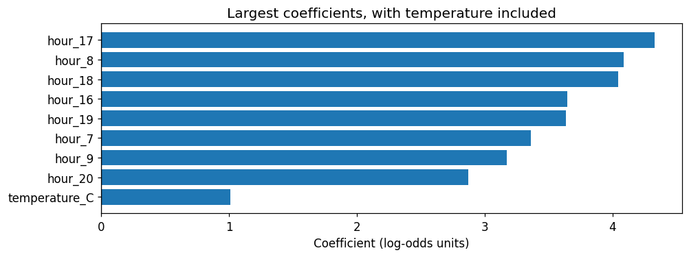
Log-odds and probability
Hold hour and weather conditions fixed, then vary temperature in the fitted logistic model.
The log-odds response is linear in standardized temperature. The sigmoid turns it into a curved probability response; the same temperature change need not give the same probability change.
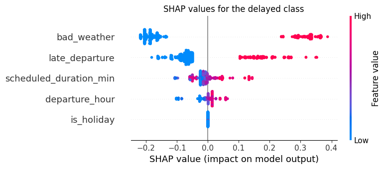
Decision tree: rules and paths
- Each split asks a threshold question; a path joins conditions with AND.
- A leaf’s class fraction estimates high-demand probability here; it is not automatically calibrated.
- Trees can learn interactions without explicitly creating interaction columns.
- A small tree is inspectable; many leaves make the full model difficult to read.
Trace a path from root to leaf. What information does the model ignore on that path?
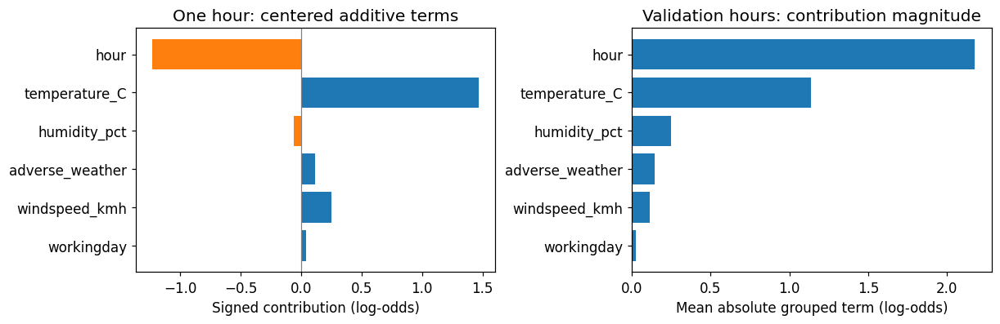
How the tree chooses a split
For the root’s selected feature, compare candidate thresholds using weighted child Gini impurity.
The learner favors purer child groups, subject to constraints such as minimum leaf size. This plot inspects the chosen feature; training also compared the other features.
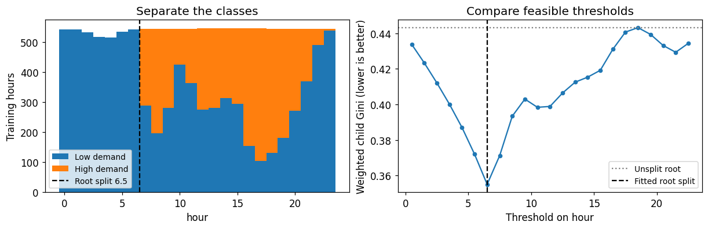
Logistic regression versus a small tree
| Logistic regression | Small decision tree | |
|---|---|---|
| Representation | Additive log-odds | Threshold rules |
| Nonlinear relationships | Engineer suitable input terms | Learned piecewise |
| Interactions | Add interaction terms | Learned along paths |
| Local reading | Sum transformed feature terms | Follow one path |
| Main readability limit | Too many coefficients | Too many rules |
Neither family is automatically accurate, stable, or understandable to every user.
Different models, different response shapes
Change hour while fixing weather at training medians. Compare working and non-working days.
The tree produces steps. Logistic regression uses separate hour-category coefficients here; it can produce a nonlinear hourly pattern even though its transformed score is additive.

Compare predictions on later hours
Same training period, validation period, target, and classification threshold (0.5).
- Balanced accuracy gives both classes equal weight.
- High-demand recall shows how often the model catches busy hours.
- Logistic preprocessing is fitted on training rows only.
Read the measured scores before choosing a model. The three candidates are illustrations, not exhaustive HPO.
| balanced_accuracy | high_demand_recall | |
|---|---|---|
| Logistic regression | 0.883 | 0.869 |
| Tree depth 2 | 0.857 | 0.995 |
| Forest | 0.906 | 0.867 |
Checkpoint: what would you inspect?
A model reports excellent validation performance.
- Which inputs could leak the answer?
- What distinguishes a globally readable model from a local explanation?
- Which stakeholder question can logistic coefficients answer?
- What would you lose by reducing a tree to depth 1?
Use these questions to frame the first coding session.
Coding break 1: Exercises 1–2 (~15 minutes)
Run the provided setup above, then complete Exercises 1–2.
- 7 min: fit and compare logistic regression and a depth-4 tree.
- 8 min: inspect a coefficient and trace a prediction through the tree.
Deliver a validation comparison and a short explanation of one hour’s prediction. Solutions are hidden below.
Exercise 1: compare interpretable models
Reuse the fitted logistic pipeline. Fit a depth-4 tree on training rows with min_samples_leaf=40 and seed 42.
Compare validation balanced accuracy and high-demand recall. Does extra depth help here?
Keep the test period unused.
Code
Exercise 2: explain a coefficient and a path
Use validation row position 24 throughout the exercise.
- Convert the temperature coefficient into an odds multiplier. What is its unit?
- Use
decision_pathto list the tree’s visited split conditions. - Show the tree’s predicted probability and observed class for this hour.
Why does neither account establish what would happen if we changed the real weather?
Code
# student_x = X_valid.iloc[[...]] # Position 24, not row label 24.
# student_odds_multiplier = np.exp(coefs[...]) # Use "temperature_C".
# print(student_odds_multiplier)
# student_nodes = student_tree.decision_path(student_x).indices
# for node in student_nodes:
# feature = student_tree.tree_.feature[node]
# if feature >= 0: # Leaves have a negative feature index.
# name = X.columns[feature]
# threshold = student_tree.tree_.threshold[node]
# direction = "<=" if student_x.iloc[0, feature] <= threshold else ">"
# print(name, direction, round(threshold, 2))
# print("P(high):", student_tree.predict_proba(student_x)[0, 1])
# print("Observed:", y_valid.iloc[...])Coding session 1 solution
Show the solution
student_tree = DecisionTreeClassifier(
max_depth=4, min_samples_leaf=40, random_state=RANDOM_STATE,
).fit(X_train, y_train)
student_scores = pd.DataFrame({
"logistic": evaluate(logistic, X_valid, y_valid),
"tree depth 4": evaluate(student_tree, X_valid, y_valid),
}).T
display(student_scores.round(3))
student_x = X_valid.iloc[[24]]
student_odds_multiplier = np.exp(coefs["temperature_C"])
print("Odds multiplier per training SD:", student_odds_multiplier)
student_nodes = student_tree.decision_path(student_x).indices
for node in student_nodes:
feature = student_tree.tree_.feature[node]
if feature >= 0:
name = X.columns[feature]
threshold = student_tree.tree_.threshold[node]
direction = "<=" if student_x.iloc[0, feature] <= threshold else ">"
print(name, direction, round(threshold, 2))
print("P(high):", student_tree.predict_proba(student_x)[0, 1])
print("Observed:", y_valid.iloc[24])The odds multiplier refers to one training standard deviation, holding other inputs fixed. A path describes the fitted tree; neither explanation identifies a causal weather effect.
Local explanations for a fixed forest
The forest is already trained. We explain its high-demand probability for one fixed validation hour.
- LIME fits a simple surrogate near this observation.
- SHAP allocates the prediction minus a reference output among features.
The explanation method does not retrain the forest. A sensible explanation can still describe an incorrect prediction.
| hour | workingday | adverse_weather | temperature_C | humidity_pct | windspeed_kmh | observed_high | forest_probability | |
|---|---|---|---|---|---|---|---|---|
| 13003 | 0 | 0 | 0 | 27.72 | 66.0 | 0.0 | 0 | 0.041 |
LIME: a local surrogate
- Generate perturbed tabular rows; query the forest on them.
- Weight rows by proximity to the observation.
- Fit a small linear model to approximate the forest’s outputs.
\[g_x=\arg\min_{g\in G}L(f,g,\pi_x)+\Omega(g)\]
\(L\) penalizes local disagreement; \(\Omega\) limits explanation complexity.
The surrogate approximates model predictions, not observed labels (Ribeiro et al. 2016).
A neighborhood for tabular data
What counts as “near” this hour?
- Mark hour and binary inputs as categorical for perturbation.
- Scale continuous inputs internally when calculating proximity.
- Choose a kernel width, sample budget, seed, and number of explanation terms.
- Individual feature sampling can create implausible combinations of hour, weather, and working-day status.
A different neighborhood can lead to a different explanation.
Inside LIME: sampling, weighting, and fitting
Left: sampled rows that differ from the hour receive less weight. Right: compare the forest outputs with the fitted surrogate on those rows.
Left marker size shows the number of sampled rows at each distance; right marker size shows local weight. The red cross is the explained hour. This teaching trace keeps all six conditions so the full interpretable distance remains visible. The earlier sparse explanation keeps four.
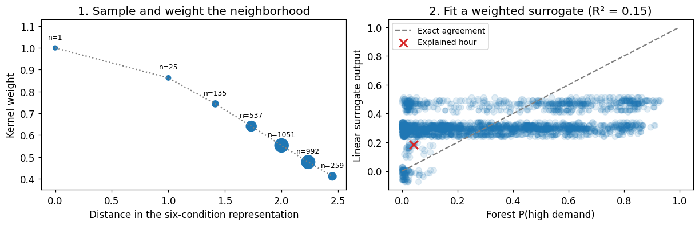
Read a LIME explanation
The bars are surrogate coefficients for conditions, such as an hour category or a temperature interval.
- Positive weights increase the surrogate’s high-demand score.
- The coefficients are not causal effects or effects per degree Celsius.
- Only four terms are shown: the explanation is deliberately sparse.
Which conditions support this prediction? Which oppose it?
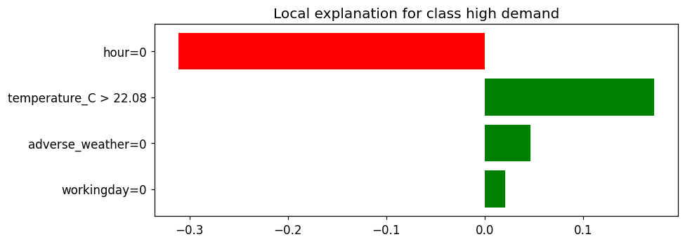
Does the surrogate fit the forest?
Inspect both diagnostics:
- Point discrepancy: surrogate prediction versus forest probability at this hour.
- Weighted \(R^2\): agreement on LIME’s sampled neighborhood.
These are surrogate diagnostics, not held-out classification accuracy. A small point discrepancy can coexist with poor neighborhood fit.
What should an operator do when local fit is poor?
| forest_P(high) | surrogate_at_hour | point_discrepancy | weighted_R2 | |
|---|---|---|---|---|
| 0 | 0.041 | 0.179 | 0.139 | 0.144 |
LIME stability
Repeat the explanation of the same model and hour with different random seeds.
- Do the strongest conditions and their signs change?
- Do local fit and point discrepancy change?
- Would the explanation support the same operator decision?
Seed stability tests sampling variability only; it does not test model retraining or population shift.
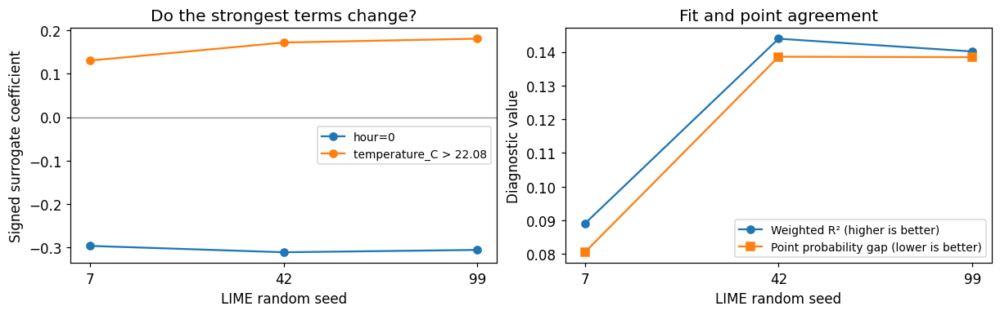
SHAP: allocate a prediction difference
\[f(x)=\phi_0+\sum_j\phi_j(x)\]
- Feature values act as players; contributions average marginal changes over coalition contexts.
- \(\phi_0\) is the reference model output.
- Here we explain high-demand probability, so contributions are in probability units.
- TreeSHAP computes attributions for this tree ensemble (Lundberg and Lee 2017; Lundberg et al. 2020).
The chosen background and dependence assumptions define the attribution question.
What does an absent feature mean?
For this interventional explanation, combine observed features with background rows:
\[v_x(S)=\frac{1}{|B|}\sum_{z\in B}f(x_S,z_{\bar S})\]
- Features in \(S\) take this hour’s values; remaining values come from a background row.
- \(v_x(\varnothing)\) is the mean model output on the background, not the observed positive rate.
- Absent does not mean zero. Correlated inputs can produce unrealistic mixed rows.
A two-feature Shapley example
Illustrative values, not fitted Bike Sharing outputs:
| Features revealed | Model output \(v(S)\) |
|---|---|
| None | 0.30 |
| Hour only (\(H\)) | 0.50 |
| Temperature only (\(T\)) | 0.40 |
| Both | 0.70 |
\[\phi_H=\tfrac12[(0.50-0.30)+(0.70-0.40)]=0.25\] \[\phi_T=\tfrac12[(0.40-0.30)+(0.70-0.50)]=0.15\]
Reconstruction: \(0.30+0.25+0.15=0.70\).
Shapley values average the feature orders
Reveal hour first, then temperature; reverse the order. Each order reaches 0.70, but assigns different marginal contributions.
Average the allocations: hour receives 0.25 and temperature 0.15. These are the illustrative values from the preceding table, not fitted Bike Sharing results.
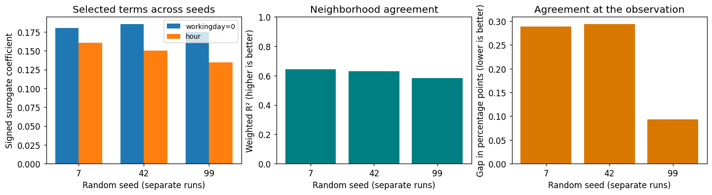
TreeSHAP for the fitted forest
Use 100 training hours as the background.
shap.TreeExplainer(
forest, data=background,
feature_perturbation="interventional",
model_output="probability",
)Select class 1 explicitly. The model’s raw output scale depends on its implementation; here the requested scale is probability.
SHAP: explain the same hour
The waterfall starts at the background mean prediction. Signed contributions lead to the forest probability.
Check: baseline + all contributions = predicted probability.
Which features move this prediction most? Does a large contribution mean the feature is actionable?
| base | sum_contributions | reconstructed | forest_P(high) | |
|---|---|---|---|---|
| 0 | 0.3135 | -0.2729 | 0.0406 | 0.0406 |
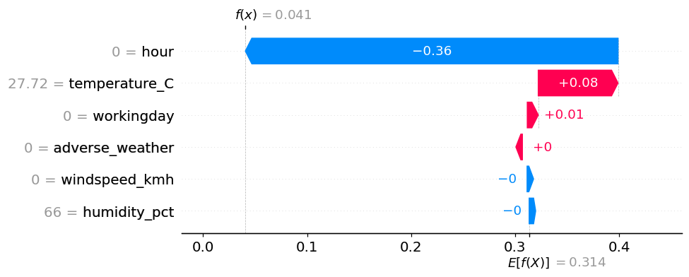
LIME versus SHAP
| LIME | SHAP in this notebook | |
|---|---|---|
| Question | Which simple model approximates this neighborhood? | Which contributions allocate this prediction minus its baseline? |
| Choices | Neighborhood, sampling, feature budget | Background, dependence game, output scale |
| Diagnostic | Local fit and point discrepancy | Probability reconstruction |
| Limitation | Sampling can change the explanation | Attribution depends on the reference game |
Rankings need not match. Additivity does not certify causality or usefulness.
Coding break 2: Exercises 3–4 (~15 minutes)
Go to Exercises 3–4.
- 7 min: explain validation hour 24 with LIME; repeat with another seed.
- 8 min: explain the same forest and hour with SHAP; verify reconstruction.
Deliver the explanations, diagnostics, and one reason their rankings may differ.
Exercise 3: fit and inspect a local surrogate
Use explain_lime on validation row position 24.
- Show its four conditions and weights.
- Show
lime_diagnosticsand interpret the weighted \(R^2\) and point discrepancy. - Repeat with seed 7; compare the two strongest terms.
Keep the forest and observation fixed.
Code
# student_x = X_valid.iloc[[...]] # Position 24.
# student_lime = explain_lime(..., seed=42)
# student_lime_repeat = explain_lime(..., seed=7)
# display(pd.DataFrame(student_lime.as_list(label=1), columns=["condition", "weight"]))
# display(pd.DataFrame([
# lime_diagnostics(student_lime, ...),
# lime_diagnostics(student_lime_repeat, ...),
# ]).round(3))
# print(student_lime.as_list(label=1)[:2])
# print(student_lime_repeat.as_list(label=1)[:2])Exercise 4: SHAP and the output scale
Explain the same row with explain_shap.
- Draw a waterfall and identify the two largest absolute contributions.
- Add the baseline to the signed contribution sum.
- Compare with the forest’s class-1 probability using
assert_allclose.
Is a positive contribution evidence that changing the feature would increase real demand? Why might LIME rank a different condition first?
Code
# student_shap = explain_shap(...)
# shap.plots.waterfall(student_shap[0], max_display=len(feature_names))
# student_reconstructed = ... + ... # base_values plus values.sum(axis=1)
# np.testing.assert_allclose(student_reconstructed,
# forest.predict_proba(student_x)[:, ...], atol=1e-6)
# print(sorted(zip(feature_names, student_shap.values[0]),
# key=lambda pair: abs(pair[1]), reverse=True)[:2])Coding session 2 solution
Show the solution
student_x = X_valid.iloc[[24]]
student_lime = explain_lime(student_x, seed=42)
student_lime_repeat = explain_lime(student_x, seed=7)
display(pd.DataFrame(student_lime.as_list(label=1), columns=["condition", "weight"]))
display(pd.DataFrame([
lime_diagnostics(student_lime, student_x),
lime_diagnostics(student_lime_repeat, student_x),
]).round(3))
print(student_lime.as_list(label=1)[:2])
print(student_lime_repeat.as_list(label=1)[:2])
student_shap = explain_shap(student_x)
shap.plots.waterfall(student_shap[0], max_display=len(feature_names))
student_reconstructed = student_shap.base_values + student_shap.values.sum(axis=1)
np.testing.assert_allclose(student_reconstructed,
forest.predict_proba(student_x)[:, 1], atol=1e-6)
print(sorted(zip(feature_names, student_shap.values[0]),
key=lambda pair: abs(pair[1]), reverse=True)[:2])LIME fits a neighborhood surrogate; SHAP allocates a difference from a background output. Different rankings are possible. Neither is a causal effect estimate, and matching the prediction does not establish usefulness.
Explanation quality
We can now produce explanations. How should we judge them?
| Property | Workshop check | What remains untested? |
|---|---|---|
| Local fidelity | LIME neighborhood fit and point discrepancy | Behavior on a different neighborhood |
| Attribution consistency | SHAP reconstruction | Causality and usefulness |
| Stability | Repeat seeds or change background | Retraining and future populations |
| Human usefulness | Operator can read and act appropriately | Requires evaluation with users |
No single scalar certifies interpretability.
Local versus aggregated explanations
One explanation describes one hour. Summaries describe the set of explained hours.
Mean absolute SHAP values show how much each feature moves probabilities across that set.
- They lose the sign of contributions.
- They depend on which hours are explained and which background is used.
- They measure attribution magnitude, not the drop in prediction quality after removing a feature.
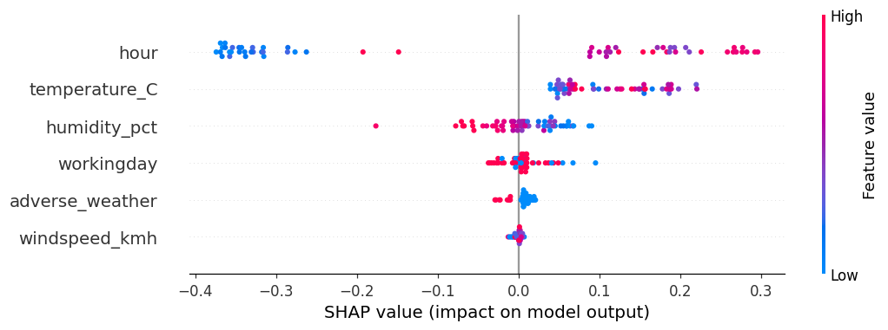
Dependence and unrealistic combinations
Imagine holding hour and working-day status fixed while borrowing weather from unrelated hours.
- The resulting row may be uncommon or implausible.
- A predictor can behave unexpectedly away from its training distribution.
- Correlated or redundant features can share attributions differently under different value functions.
Question: would adding apparent temperature make the explanation more informative, or mostly add a correlated measurement?
Background sensitivity
Explain the same hour using two training backgrounds:
- A random sample of all training hours.
- A sample of training morning hours (7–9).
The second asks for a comparison against a different reference population. Prediction stays fixed; baseline and feature contributions can change.
This is a sensitivity analysis, not a search for the most persuasive explanation.
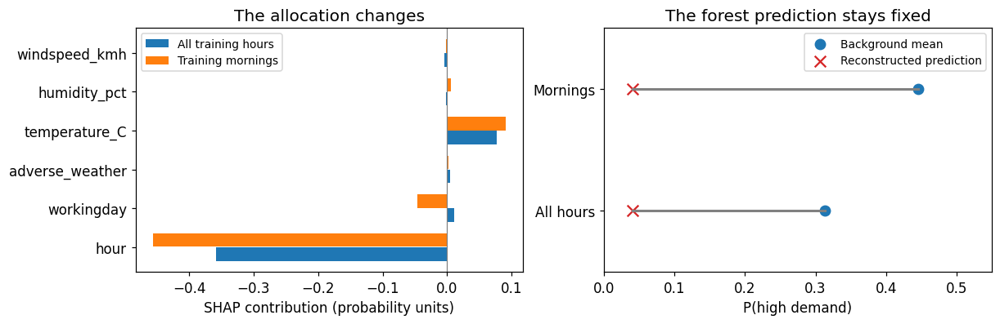
Stability has several meanings
| What changes? | What stays fixed? | What is being tested? |
|---|---|---|
| LIME seed | Model, hour, sampling settings | Sampling variability |
| SHAP background | Model and hour | Reference sensitivity |
| Training sample | Model family and protocol | Model and explanation stability |
| Time period | Deployed model | Population shift |
The first two checks in this workshop do not establish the last two.
Is this another multi-objective problem?
Often yes: predictive error, explanation complexity, stability, and explanation time can compete.
For candidate decision trees, consider:
\[\min_h\left(1-\mathrm{BA}_{valid}(h),\;\#\mathrm{leaves}(h)\right)\]
Leaf count is a structural proxy for readability, not a universal interpretability score.
A performance–interpretability tradeoff is possible; it is not inevitable.
Dominance and the Pareto frontier
Candidate A dominates B if A is no worse on both objectives and strictly better on at least one.
Illustrative costs:
| Tree | 1 − balanced accuracy | Leaves |
|---|---|---|
| A | 0.20 | 4 |
| B | 0.22 | 8 |
| C | 0.15 | 12 |
A dominates B. Neither A nor C dominates the other. Which one would an operator choose?
Tree complexity and predictive performance
Each point is a fitted tree evaluated on the same validation period. Circled points are non-dominated among these candidates.
Would a small loss of balanced accuracy be acceptable in exchange for fewer rules?
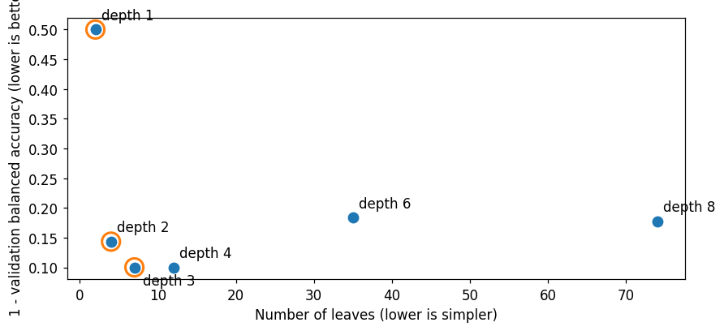
Turn preferences into a selection rule
For the exercise, set a tolerance of 0.02 absolute balanced accuracy below the best candidate.
- Keep trees within this tolerance on validation data.
- Choose the feasible tree with the fewest leaves.
- Break a leaf-count tie using lower validation error.
- Evaluate the chosen model once on the untouched test period.
The tolerance is a stakeholder preference for this exercise, not a universal rule.
Explanation complexity is another choice
For a fixed forest and observation, change LIME’s term budget.
- Two terms may be easier to read but omit model behavior.
- Six terms may fit better but demand more attention.
- Measure fit and elapsed time; a larger budget does not guarantee a better explanation for a person.
This is a different optimization problem from choosing a predictive model.
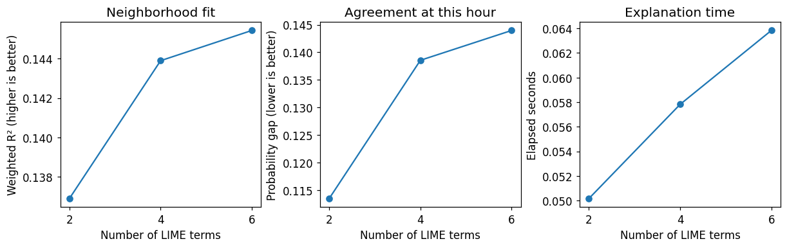
What the objectives leave out
Leaf count and local fit do not measure everything an operator needs.
- Are the feature names and units understandable?
- Are the reference population and output class clear?
- Does the explanation remain useful when the prediction is wrong?
- Does it support the intended decision without encouraging causal overinterpretation?
Test comprehension with the intended audience. A Pareto frontier does not decide what is acceptable.
Checkpoint: recommend with evidence
Choose a candidate and an explanation strategy.
- State the stakeholder’s question.
- Report validation performance and the relevant complexity measure.
- Include one explanation quality or sensitivity check.
- State a limitation and an additional check you would run.
Discuss: would your recommendation change for a researcher rather than a bike operator?
Coding break 3: Exercises 5–6 (~15 minutes)
Go to Exercises 5–6.
- 7 min: identify the Pareto candidates and select a tree under the given tolerance.
- 8 min: compare two SHAP backgrounds for hour 24 and write a recommendation.
Deliver the candidate table, sensitivity check, and a two-sentence recommendation. Evaluate the selected tree on the test period only after selection.
Exercise 5: make a multi-objective choice
Use tradeoffs and pareto_mask; both error and leaves are minimized.
- Identify the non-dominated trees from the depth sweep.
- Keep candidates within 0.02 absolute balanced accuracy of the best.
- Select the feasible candidate with the fewest leaves, then lowest error.
- Report the chosen depth, score, and leaf count. What does leaf count miss?
Code
# student_tradeoffs = tradeoffs.copy()
# student_tradeoffs["pareto"] = pareto_mask(student_tradeoffs[[..., ...]])
# display(student_tradeoffs.loc[student_tradeoffs.pareto].round(3))
# student_best = student_tradeoffs.balanced_accuracy.max()
# student_feasible = student_tradeoffs.loc[
# student_tradeoffs.balanced_accuracy >= student_best - ...
# ]
# student_choice = student_feasible.sort_values(
# ["leaves", "error"], ascending=[True, True]
# ).iloc[0]
# display(student_choice)Exercise 6: audit the reference and recommend
Explain validation hour 24 using shap_explainer and morning_explainer.
- Show both baseline probabilities and the signed contribution differences.
- Check that both explanations reconstruct the same forest probability.
- Recommend a predictive model using Exercise 5, and explain one limitation of the forest explanations.
- Once the tree choice is fixed, evaluate it on the final test period.
Do not choose a background because it produces a more appealing story.
Code
# student_x = X_valid.iloc[[24]]
# student_all = explain_shap(student_x, ...)
# student_morning = explain_shap(student_x, ...)
# display(pd.DataFrame({
# "all_hours": student_all.values[0],
# "morning_hours": student_morning.values[0],
# }, index=feature_names).round(4))
# print("Bases:", student_all.base_values, student_morning.base_values)
# for attribution in [student_all, student_morning]:
# np.testing.assert_allclose(
# attribution.base_values + attribution.values.sum(axis=1),
# forest.predict_proba(student_x)[:, 1], atol=1e-6)
# chosen_model = tree_candidates[int(student_choice.max_depth)]
# display(pd.DataFrame([evaluate(chosen_model, ..., ...)], index=["final test"]))
# Write two sentences: your choice with evidence, then an explanation limitation.Coding session 3 solution
Show the solution
student_tradeoffs = tradeoffs.copy()
student_tradeoffs["pareto"] = pareto_mask(student_tradeoffs[["error", "leaves"]])
display(student_tradeoffs.loc[student_tradeoffs.pareto].round(3))
student_best = student_tradeoffs.balanced_accuracy.max()
student_feasible = student_tradeoffs.loc[
student_tradeoffs.balanced_accuracy >= student_best - 0.02
]
student_choice = student_feasible.sort_values(
["leaves", "error"], ascending=[True, True]
).iloc[0]
display(student_choice)
student_x = X_valid.iloc[[24]]
student_all = explain_shap(student_x, shap_explainer)
student_morning = explain_shap(student_x, morning_explainer)
display(pd.DataFrame({"all_hours": student_all.values[0],
"morning_hours": student_morning.values[0]}, index=feature_names).round(4))
print("Bases:", student_all.base_values, student_morning.base_values)
for attribution in [student_all, student_morning]:
np.testing.assert_allclose(attribution.base_values + attribution.values.sum(axis=1),
forest.predict_proba(student_x)[:, 1], atol=1e-6)
chosen_model = tree_candidates[int(student_choice.max_depth)]
display(pd.DataFrame([evaluate(chosen_model, X_test, y_test)], index=["final test"]))The rule selects the smallest feasible tree among these candidates. Leaf count omits feature meaning, rule length, comprehension, and stability. Both SHAP references reconstruct the same forest prediction while answering different comparison questions. If final performance is lower, investigate seasonal shift with new evaluation data; do not tune on this test period.
Further reading and references
Molnar, Interpretable Machine Learning, online third edition:
- Interpretability, goals, methods overview
- Logistic regression, decision trees
- LIME, Shapley values, SHAP
Original methods: (Ribeiro et al. 2016; Lundberg and Lee 2017; Lundberg et al. 2020). Implementation: LIME, TreeExplainer.
Concepts adapted with attribution from Molnar’s CC BY-NC-SA 4.0 online book. Bike examples, code, and exercises are written for this workshop.
Fanaee-T, Hadi. 2013. Bike Sharing. UCI Machine Learning Repository. https://doi.org/10.24432/C5W894.
Lundberg, Scott M., Gabriel Erion, Hugh Chen, et al. 2020. “From Local Explanations to Global Understanding with Explainable AI for Trees.” Nature Machine Intelligence 2 (1): 56–67.
Lundberg, Scott M., and Su-In Lee. 2017. “A Unified Approach to Interpreting Model Predictions.” Advances in Neural Information Processing Systems 30.
Molnar, Christoph. n.d. Interpretable Machine Learning: A Guide for Making Black Box Models Explainable. Accessed November 2, 2026. https://christophm.github.io/interpretable-ml-book/.
Ribeiro, Marco Tulio, Sameer Singh, and Carlos Guestrin. 2016. “‘Why Should I Trust You?’: Explaining the Predictions of Any Classifier.” Proceedings of the 22nd ACM SIGKDD International Conference on Knowledge Discovery and Data Mining, 1135–44.